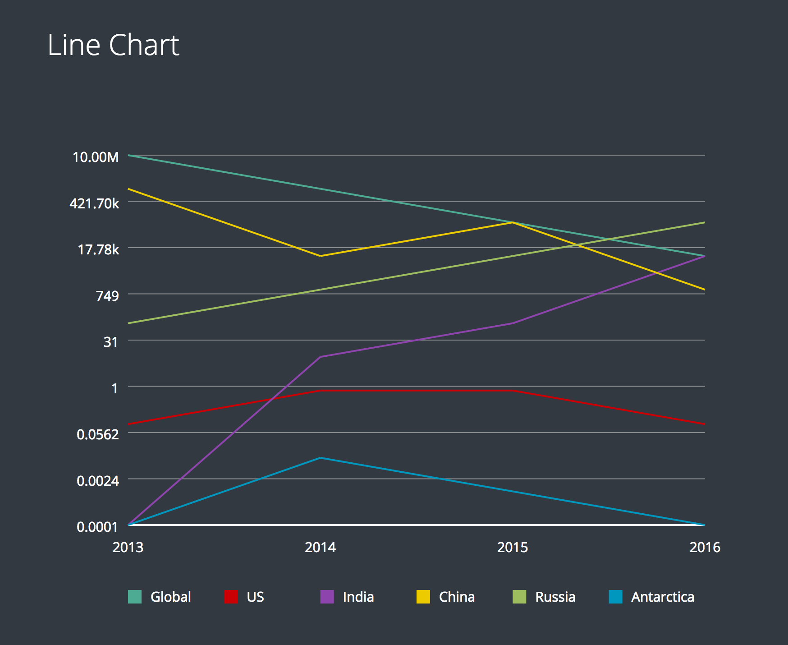

May 17, 2017
I had my last UROP meeting at the MIT Media Lab Collective Learning Group this semester. Quick breakdown of that sentence:
When I was deciding where to do research this semester, my ideal UROP project combined design, programming, and data science. Thus the Collective Learning Group seemed like the perfect choice and luckily, they were starting a new project called Replot.
Replot is an open source library of data visualization tools built as custom React components. Okay, so what is React and why is this useful?
React is currently one of the most popular JavaScript libraries for building user interfaces on the web. It is awesome because it breaks down a web application into these customizable pieces called components. This style of building on the web has several benefits. Components can be imported into different projects, nested within each other, and reused infinitely.
Also, these components operate independently from each other as self-contained units. So when a user interacts with the web application and changes its state, React calculates which components are affected and only updates those specific pieces of the interface. This really boosts the efficiency of the application.
Currently, there aren't useful methods in React for creating graphics to represent data. D3 is a widely used, very powerful JavaScript library for data visualization. But unfortunately React and D3 don't integrate well. That's because React's system of updating website elements relies on dealing with state changes inside component render methods. Meanwhile D3 modifies elements directly, making changes that React doesn't account for and will remove after its next state update.
So we set out to design easily importable data visualization components in React. Anyone who wants to create a display can pass the data as a prop to our components and a beautifully designed chart appears.
A super basic import can look like:
<LineChart data={this.state.data} />An import with more customization can look like:
<LineChart data={this.state.data}
titleKey="location" xKey="year" yKey="population"
scale={this.state.scale} grid="default"
legend="default" legendColor={"#FFFFFF"}
color={this.state.color} axisColor={"#FFFFFF"}
/>When I first started working on Replot, I didn't know anything about React or the other tools we were using: JSX (JavaScript preprocessing that makes React a lot easier to write) and webpack (bundler that loads preprocessed files to make web deployable JavaScript). I started out creating a basic todo app in React, figuring out components and states and props.
The first type of display I tackled was the line chart. My first component was a line. Two pairs of x and y coordinates, a color, stroke width, opacity fed into the props; a single line comes out. I used the line component to build a line series component, that connected a series of coordinates with lines. The chart component geometrically converted inputted data points into a list of corresponding coordinates, which went into the line series component, which went into all the line components.
There were a few other parts of the line chart I made that were actually standardizable to other types of charts. The first was the axis component. I imported the line component and made calculations based on the data distribution and chart dimensions to set the axis labels. Axis labels were actually the trickiest part of the whole project. One challenging aspect was making number labels appealing to read, especially really large numbers. I actually used the Humanize library to help; it formats a number like "123456789" into something more compact like "123.5M". Another challenging aspect was how to fit horizontal axis labels side by side. I used label lengths to determine how to angle them, maximizing horizontal orientation while including sufficient buffer space.
The other standardizable component was the legend. I built in a default color palette, but I also built a function to create palettes. In a three-dimensional colorspace with axes for red, green, and blue, the function creates a sloped line based on two starting color values. It then divides the space evenly along the line based on how many colors are requested from the palette.
I added a few other features, like the ability to convert the graph to a logarithmic scale. I also added spring motion animation, so the graph appears to grow out from the axes origin.
Project examples are up on the Replot website, but that's currently private as it is still in development. So for now, here is a sneak peek of the line chart:
Working on Replot was an awesome experience and the best decision I made this semester. I'm super grateful to my mentors, Sanjay and Almaha, for being incredibly encouraging, patient, and supportive of my ideas throughout the process. There were days I would start coding after class and not stop until long after I should've started my psets, whoops. At college, where so many different activities and commitments compete for your time, I've really learned that passions prioritize themselves. And Replot proved to be one of mine! I'm planning to continue work on Replot next year, updates to follow.